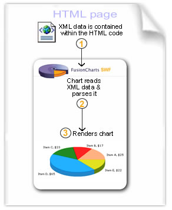

dataXML Method |
In this method, you send the XML data along with the HTML Content and chart SWF file to the browser. The SWF loads, reads this data (present in same page) and then renders the chart. The following diagram would help you understand better: |
 |
As you can see above, the following steps are involved in this process:
If your XML Data Document contains special characters like - ?, & etc. in dataXML mode, you'll need to XML/URL Encode them. |
Effectively, in this process you need the following to build a chart:
|
| Sample Usage of dataXML method using FusionCharts JavaScript Class |
| <div id="chart1div"> This text is replaced by the chart. </div> <script type="text/javascript"> var chart1 = new FusionCharts("Column2D.swf", "ChId1", "600", "400", "0", "0"); chart1.setDataXML("<chart><set name='Data1' value='1' /></chart>"); chart1.render("chart1div"); </script> |
| Sample Usage of dataXML method using direct HTML Embedding Method |
| <object classid="clsid:d27cdb6e-ae6d-11cf-96b8-444553540000" codebase="http://fpdownload.macromedia.com/pub/shockwave/cabs/flash/swflash.cab#version=8,0,0,0" width="500" height="300" id="Column2D" align="middle">
<param name="movie" value="Column2D.swf?chartWidth=500&chartHeight=300" /> <param name="FlashVars" value="&dataXML=<chart><set name='Data1' value='1' /></chart>" /> <param name="quality" value="high" /> <embed src="Column2D.swf?chartWidth=500&chartHeight=300" FlashVars="&dataXML=<chart><set name='Data1' value='1' /></chart>" quality="high" bgcolor="#ffffff" width="400" height="300" name="Column2D" align="middle" allowScriptAccess="sameDomain" type="application/x-shockwave-flash" pluginspage="http://www.macromedia.com/go/getflashplayer" /> </object> |
With this method, however, there can sometimes be problems when you're working with larger chunks of data. This problem occurs due to the limitation on dataXML string length imposed by the browser. When you specify a larger chunk of data using dataXML method, the browser ignores everything after a certain length. This causes FusionCharts to hang (nothing would be displayed on-screen) as the full data has not been supplied to it. Therefore, dataURL method is recommended for larger chunks of data (basically - multi-series/combination charts). |